File: 000390.gt.txt (if the image is defective, simply delete all Arabic text and the line will be excluded)
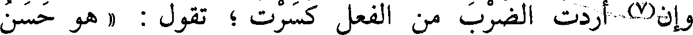
وإن(7) أردت الضرب من الفعل كسرت ؛ تقول : « هو حسن
File: 000391.gt.txt (if the image is defective, simply delete all Arabic text and the line will be excluded)
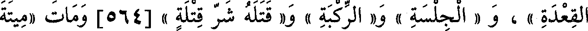
القعدة » ، و « الجلسة » و« الركبة » و« قتله شر قتلة » [564] ومات «ميتة
File: 000392.gt.txt (if the image is defective, simply delete all Arabic text and the line will be excluded)
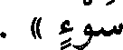
سوء » .
File: 000393.gt.txt (if the image is defective, simply delete all Arabic text and the line will be excluded)
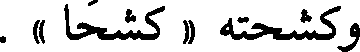
وكشحته « كشحا » .
File: 000394.gt.txt (if the image is defective, simply delete all Arabic text and the line will be excluded)
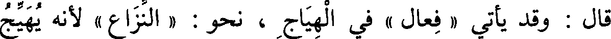
قال : وقد يأتي « فعال » في الهياج ، نحو : « النزاع » لأنه يهيج
File: 000395.gt.txt (if the image is defective, simply delete all Arabic text and the line will be excluded)
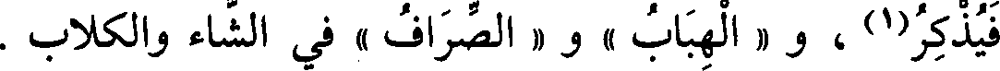
فيذكر(1) ، و « الهباب » و « الصراف » في الشاء والكلاب .
File: 000396.gt.txt (if the image is defective, simply delete all Arabic text and the line will be excluded)
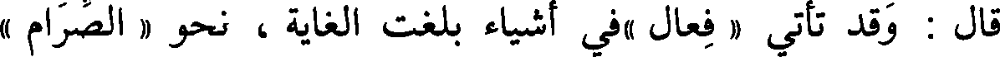
قال : وقد تأتي « فعال »في أشياء بلغت الغاية ، نحو « الصرام »
File: 000397.gt.txt (if the image is defective, simply delete all Arabic text and the line will be excluded)
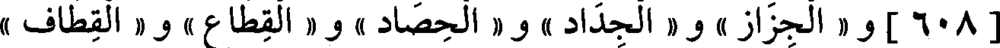
[608] و « الجزاز » و « الجداد » و « الحصاد » و « القطاع » و « القطاف »
File: 000398.gt.txt (if the image is defective, simply delete all Arabic text and the line will be excluded)
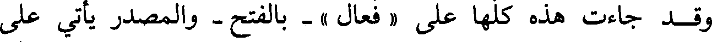
وقد جاءت هذه كلها على « فعال » - بالفتح - والمصدر يأتي على
File: 000399.gt.txt (if the image is defective, simply delete all Arabic text and the line will be excluded)
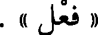
« فعل » .
File: 000400.gt.txt (if the image is defective, simply delete all Arabic text and the line will be excluded)
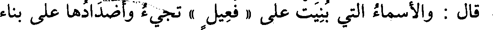
قال : والأسماء التي بنيت على « فعيل » تجيء وأضدادها على بناء
File: 000401.gt.txt (if the image is defective, simply delete all Arabic text and the line will be excluded)
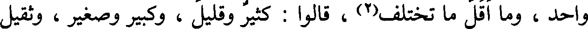
واحد، وما أقل ما تختلف(2) ، قالوا : كثير وقليل ، وكبير وصغير ، وثقيل
File: 000402.gt.txt (if the image is defective, simply delete all Arabic text and the line will be excluded)
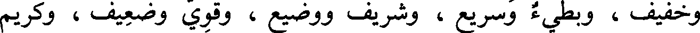
وخفيف ، وبطيء وسريع ، وشريف ووضيع ، وقوي وضعيف ، وكريم
File: 000403.gt.txt (if the image is defective, simply delete all Arabic text and the line will be excluded)
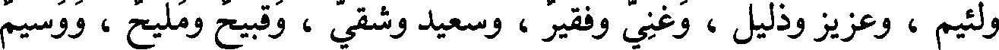
ولئيم ، وعزيز وذليل ، وغني وفقير ، وسعيد وشقي ، وقبيح ومليح ، ووسيم
File: 000404.gt.txt (if the image is defective, simply delete all Arabic text and the line will be excluded)
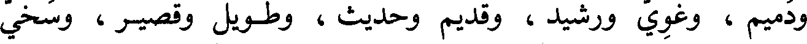
ودميم ، وغوي ورشيد ، وقديم وحديث ، وطويل وقصير ، وسخي
File: 000405.gt.txt (if the image is defective, simply delete all Arabic text and the line will be excluded)
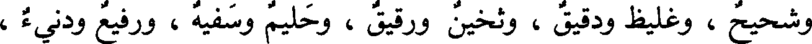
وشحيح ، وغليظ ودقيق ، وثخين ورقيق ، وحليم وسفيه ، ورفيع ودنيء ،
File: 000406.gt.txt (if the image is defective, simply delete all Arabic text and the line will be excluded)
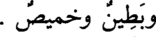
وبطين وخميص .
File: 000407.gt.txt (if the image is defective, simply delete all Arabic text and the line will be excluded)
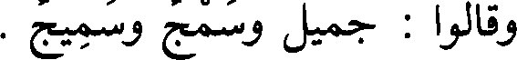
وقالوا : جميل وسمج وسميج .
File: 000408.gt.txt (if the image is defective, simply delete all Arabic text and the line will be excluded)
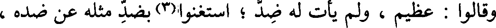
وقالوا : عظيم ، ولم يأت له ضد ؛ استغنوا(3) بضد مثله عن ضده ،
File: 000409.gt.txt (if the image is defective, simply delete all Arabic text and the line will be excluded)
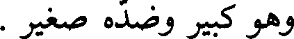
وهو كبير وضده صغير .
File: 000410.gt.txt (if the image is defective, simply delete all Arabic text and the line will be excluded)
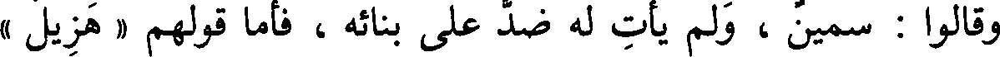
وقالوا : سمين ، ولم يأت له ضد على بنائه ، فأما قولهم « هزيل »
File: 000411.gt.txt (if the image is defective, simply delete all Arabic text and the line will be excluded)
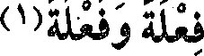
فعلة وفعلة(1)
File: 000412.gt.txt (if the image is defective, simply delete all Arabic text and the line will be excluded)
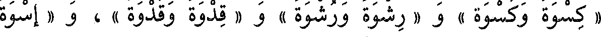
« كسوة وكسوة » و « رشوة ورشوة » و « قدوة وقدوة » ، و « إسوة
File: 000413.gt.txt (if the image is defective, simply delete all Arabic text and the line will be excluded)
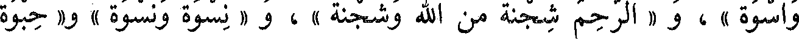
واسوة » ، و « الرحم شجنة من الله وشجنة » ، و « نسوة ونسوة » و« حبوة
File: 000414.gt.txt (if the image is defective, simply delete all Arabic text and the line will be excluded)
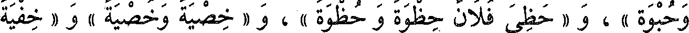
وحبوة » ، و «حظي فلان حظوة وحظوة » ، و « خصية وخصية » و « خفية
File: 000415.gt.txt (if the image is defective, simply delete all Arabic text and the line will be excluded)
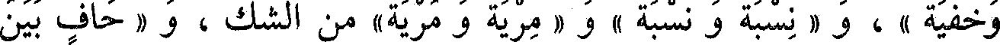
وخفية » ، و « نسبة ونسبة » و « مرية ومرية » من الشك ، و « حاف بين
File: 000416.gt.txt (if the image is defective, simply delete all Arabic text and the line will be excluded)
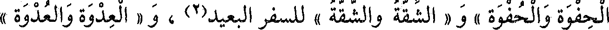
الحفوة والحفوة » و « الشقة والشقة » للسفر البعيد(2) ، و « العدوة والعدوة »
File: 000417.gt.txt (if the image is defective, simply delete all Arabic text and the line will be excluded)
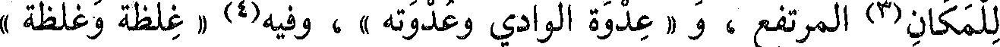
للمكان(3) المرتفع ، و « عدوة الوادي وعدوته » ، وفيه(4) « غلظة وغلظة »
File: 000418.gt.txt (if the image is defective, simply delete all Arabic text and the line will be excluded)
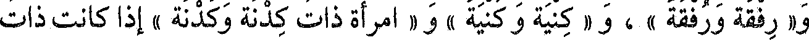
و« رفقة ورفقة » ، و « كنية وكنية » و « امرأة ذات كدنة وكدنة » إذا كانت ذات
File: 000419.gt.txt (if the image is defective, simply delete all Arabic text and the line will be excluded)
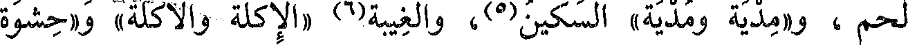
لحم ، و«مدية ومدية» السكين(5)، والغيبة(6) «الإكلة والأكلة» و «حشوة
To Save: `Ctrl+s`, make sure to choose `Webpage, complete`!